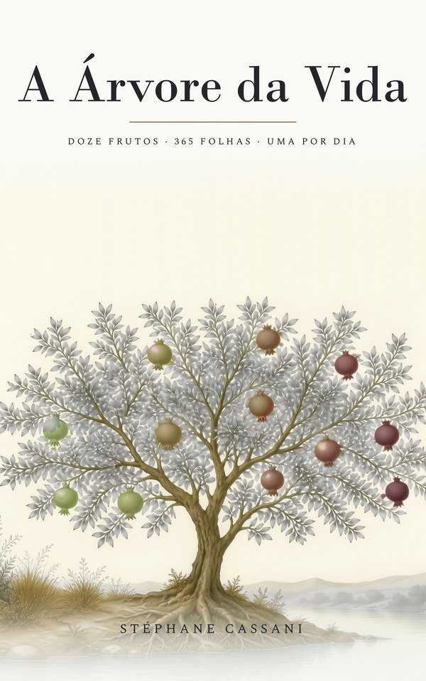
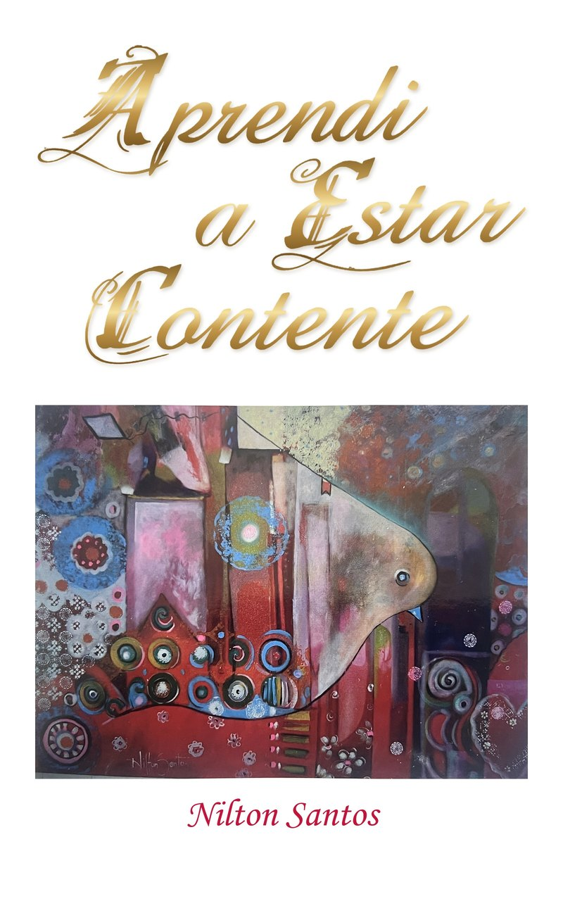

A Árvore da Vida
Uma meditação para cada dia do ano, reunida em doze frutos. O audiolivro segue o livro: um capítulo por fruto, do primeiro ao décimo segundo.
Cada livro lido por inteiro, capítulo por capítulo. Ouça aqui, ou baixe um único arquivo .m4b que o seu celular retoma onde você parou.
3 audiolivros · 5 h 02 de escuta · todos gratuitos

Uma meditação para cada dia do ano, reunida em doze frutos. O audiolivro segue o livro: um capítulo por fruto, do primeiro ao décimo segundo.

Uma palavra esquecida do hebraico, tsēlāʿ, e a narrativa do jardim muda de sentido. O mais curto dos três: ouve-se num único trajeto.

O segredo de Paulo para uma vida livre e cheia de alegria, por um pastor psicólogo de Goiânia.
Todos são narrados por Stéphane Cassani, com uma voz clonada a partir da sua. O arquivo .m4b guarda os capítulos: abra-o num aplicativo de audiolivros — Apple Livros, Smart AudioBook Player, VLC — para navegar entre eles.